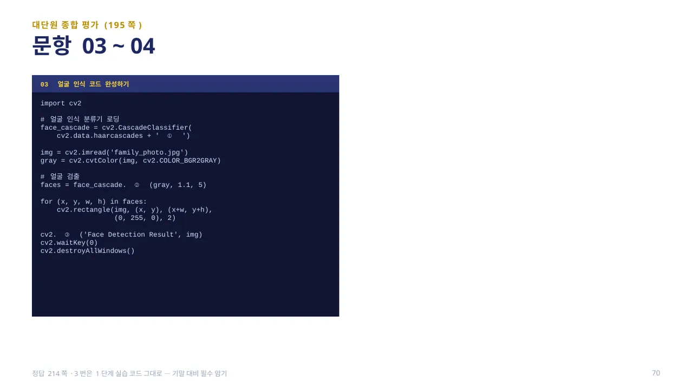
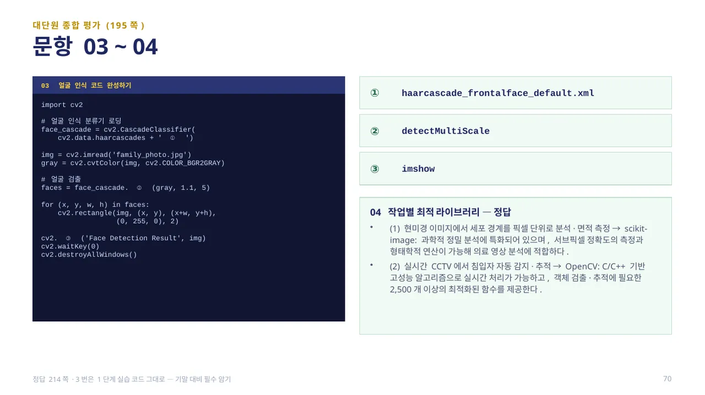
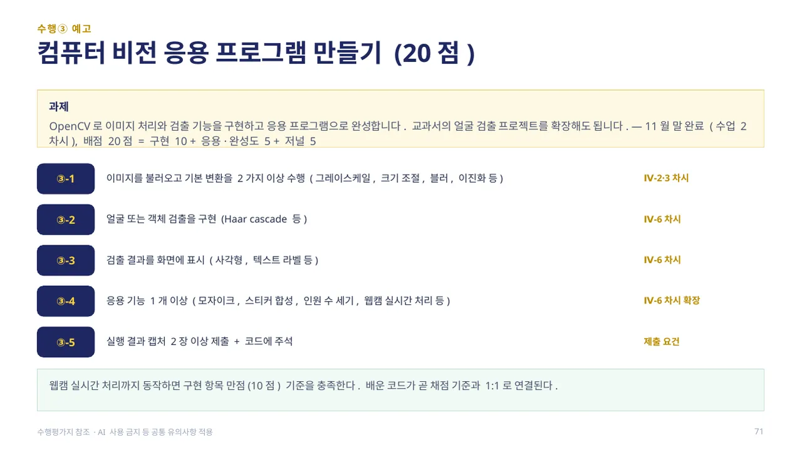
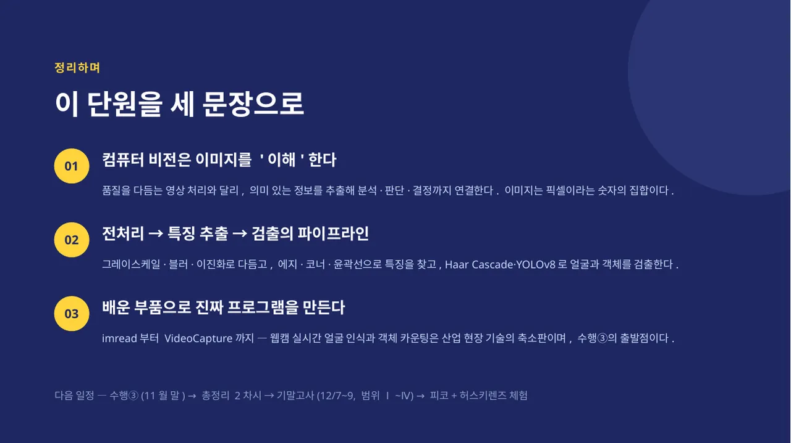

중단원 마무리: OpenCV(실시간 처리), Pillow(편집), matplotlib(시각화), scikit-image(과학적 분석) 네 라이브러리를 목적에 따라 골라 씁니다. 이미지 처리의 기본 흐름은 imread() 불러오기 → resize() 크기 조정 → cvtColor() 색상 변환 → imwrite() 저장입니다.
전처리와 변환은 필터(블러: 노이즈 감소·배경 흐림) → 에지 검출(외곽선 추출) → 이진화(흑백 표현으로 중요한 정보만 추출) → 기하학적 변환(이동·회전·확대/축소·기울이기·왜곡 보정) 순으로 생각할 수 있습니다. 중요한 부분 찾기는 에지(경계선) → 코너(중요한 지점) → 윤곽선(전체 형태) 순으로 결합할 수 있고, 프로젝트 실습에서는 Haar Cascade로 웹캠의 얼굴·눈·웃음을 동시 검출하거나 YOLOv8로 실시간 객체를 탐지합니다. (교과서 192쪽)

대단원 종합 평가 03(195쪽): 지금까지 배운 얼굴 인식 코드의 빈칸을 채워 봅니다. face_cascade = cv2.CascadeClassifier(cv2.data.haarcascades + ‘ ① ’), faces = face_cascade. ② (gray, 1.1, 5), cv2. ③ (‘Face Detection Result’, img)의 ①·②·③에 들어갈 것을 각각 적어 봅니다.
답 보기답 숨기기

① haarcascade_frontalface_default.xml ② detectMultiScale ③ imshow — Ⅳ-6차시에서 배운 1단계 코드 그대로입니다. 분류기 파일명 로딩 → detectMultiScale로 얼굴 검출 → imshow로 화면 표시의 흐름을 기억하면 됩니다. (정답 214쪽)

수행③ 과제는 OpenCV로 이미지 처리와 검출 기능을 구현하고 응용 프로그램으로 완성하는 것입니다. 교과서의 얼굴 검출 프로젝트를 확장해도 됩니다. 배점 20점 = 구현 10 + 응용·완성도 5 + 저널 5로 구성됩니다.
요구사항은 ③-1 이미지를 불러오고 기본 변환을 2가지 이상 수행(그레이스케일, 크기 조절, 블러, 이진화 등), ③-2 얼굴 또는 객체 검출 구현(Haar Cascade 등), ③-3 검출 결과를 화면에 표시(사각형, 텍스트 라벨 등), ③-4 응용 기능 1개 이상(모자이크, 스티커 합성, 인원 수 세기, 웹캠 실시간 처리 등), ③-5 실행 결과 캡처 2장 이상 제출 + 코드에 주석입니다. 배운 코드가 곧 채점 기준과 1:1로 연결됩니다.

① 컴퓨터 비전은 이미지를 ‘이해’한다 — 품질을 다듬는 영상 처리와 달리, 의미 있는 정보를 추출해 분석·판단·결정까지 연결합니다. 이미지는 픽셀이라는 숫자의 집합입니다.
② 전처리 → 특징 추출 → 검출의 파이프라인 — 그레이스케일·블러·이진화로 다듬고, 에지·코너·윤곽선으로 특징을 찾고, Haar Cascade·YOLOv8로 얼굴과 객체를 검출합니다.
③ 배운 부품으로 진짜 프로그램을 만든다 — imread부터 VideoCapture까지, 웹캠 실시간 얼굴 인식과 객체 카운팅은 산업 현장 기술의 축소판이며 수행③의 출발점입니다.
 인공지능 파이썬 실무
인공지능 파이썬 실무